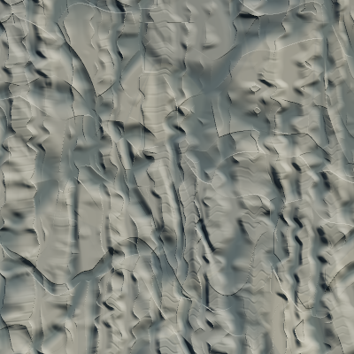
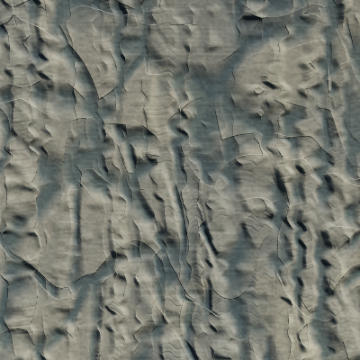
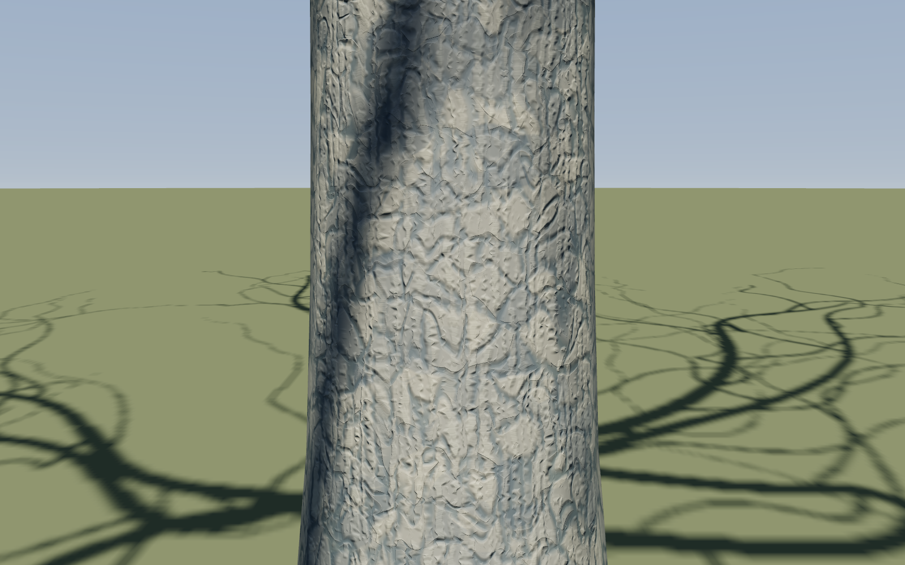
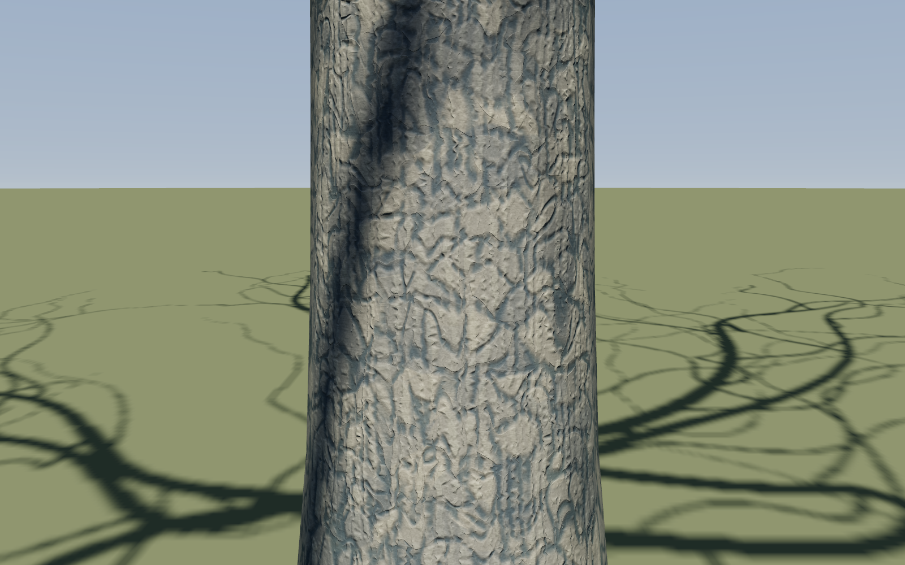
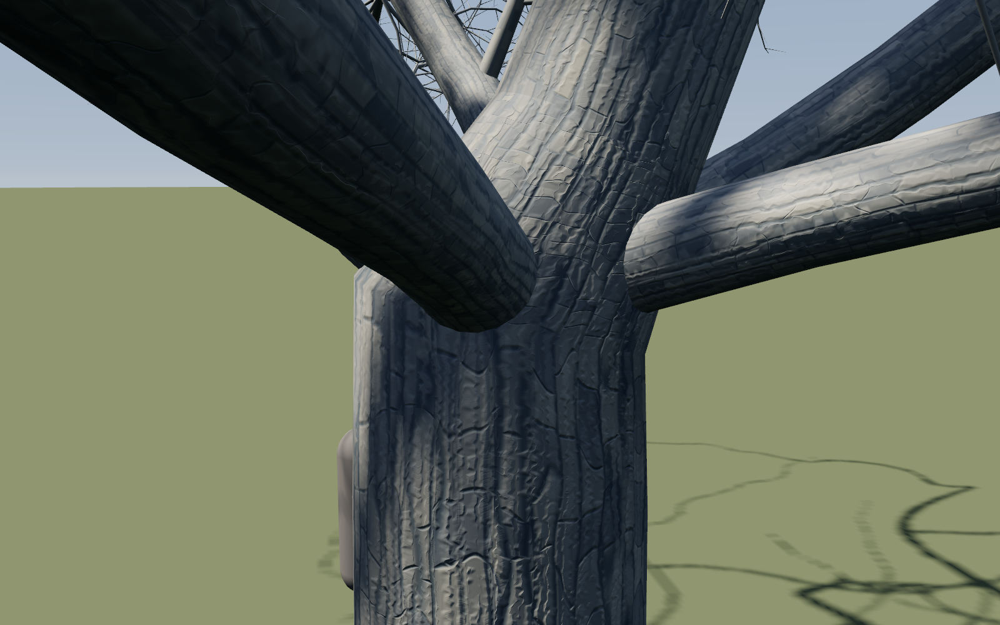
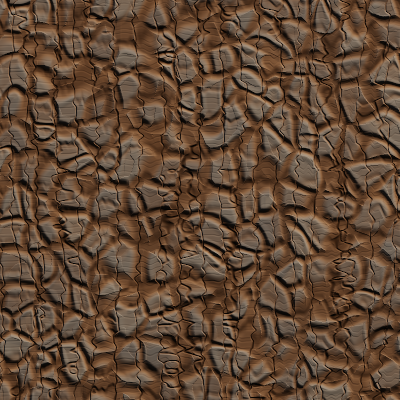
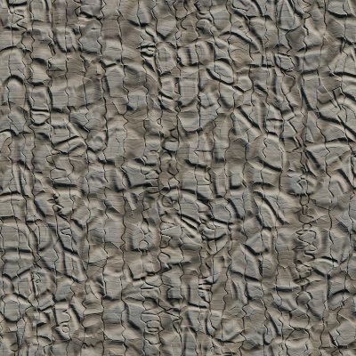
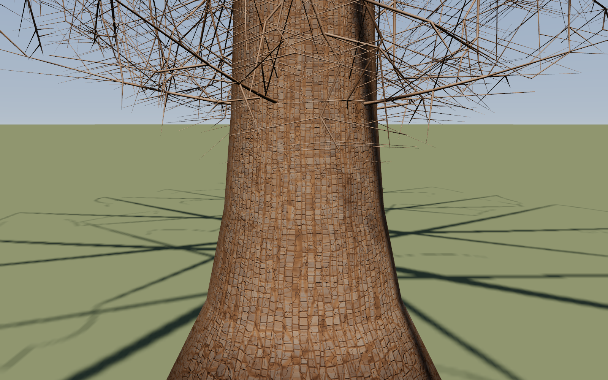
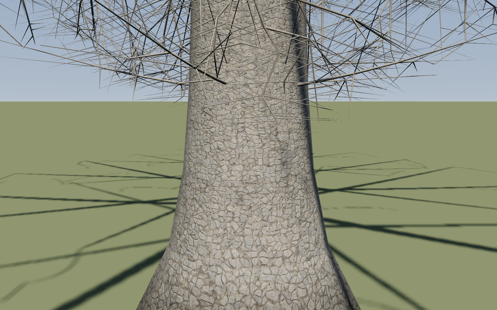
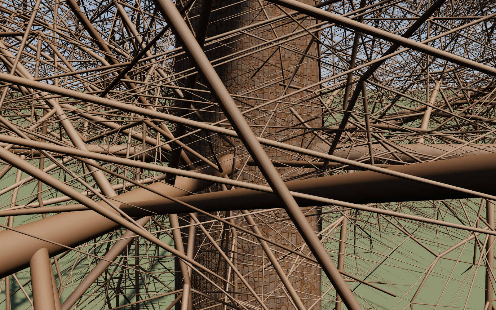

Calibrated render patches span 0.4 m. Photographs guide appearance; their physical scale and colour calibration are unknown. Oak reference resolution is limited. Owner verdict pending.















Historical differences include intervening generator and renderer work. The flat patches provide the immediate before/after material comparison. Performance remains unmeasured under GPU contention. The historical hero sweep is unresolved; see the report.